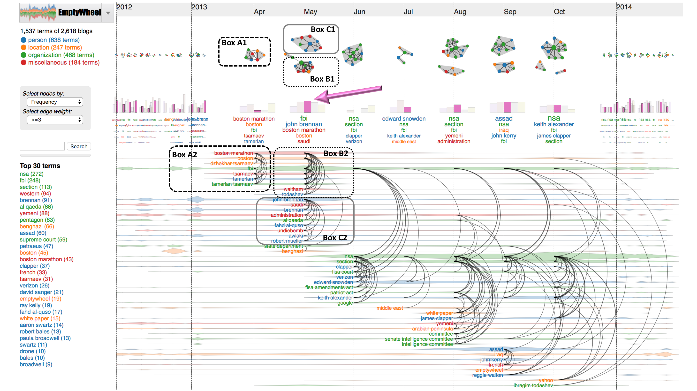
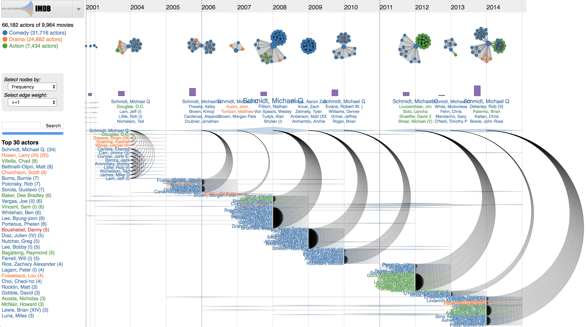
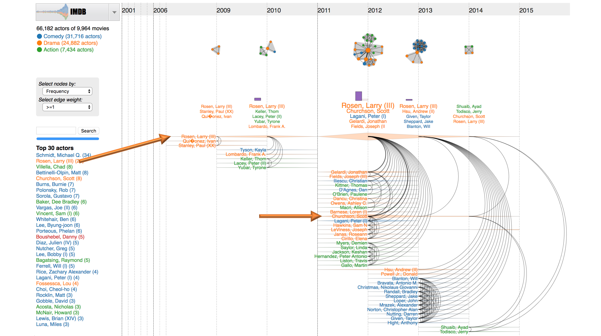
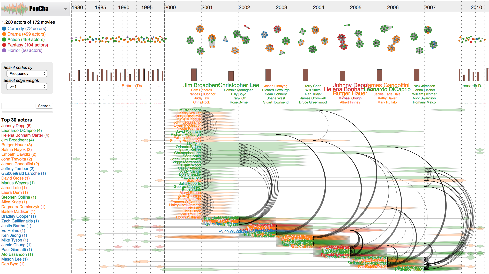
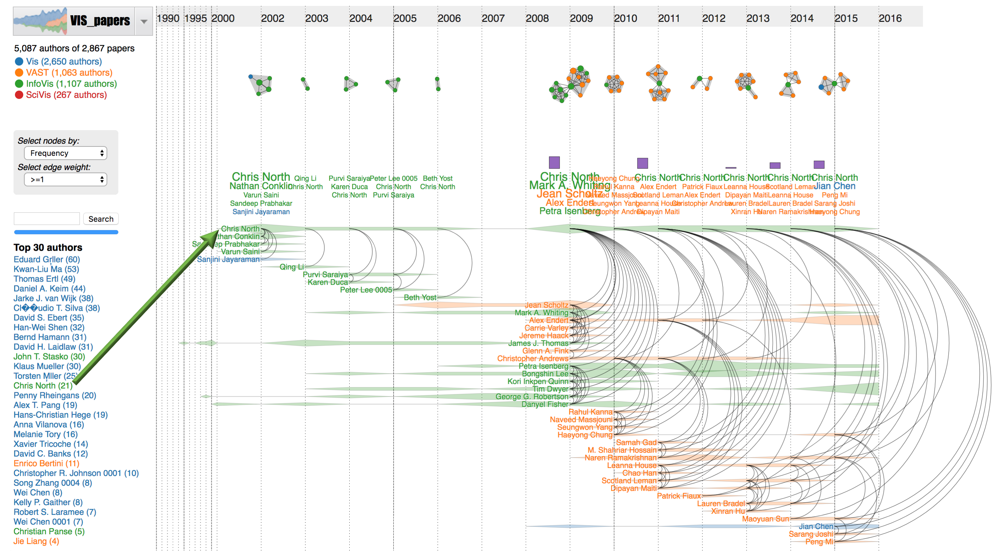
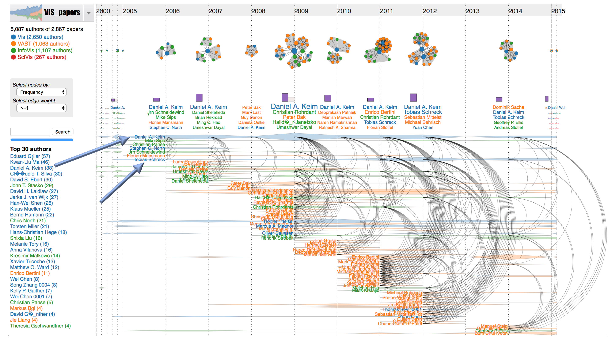
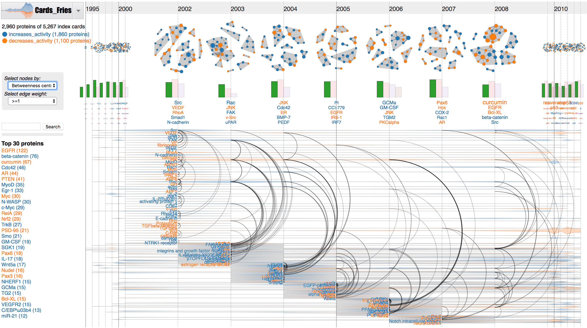

1. Text analytics
We have shown examples of
DycomDetector on different text data:
Wikinews (Figure 2),
Huffington Post (Figure 5),
Crooks and Liars (Figure 1), and
Esquire (Figure 3) in our submitted manuscripts. The following figure shows another use case on the
EmptyWheel blogs. In particular, terms (nodes) are scaled by their popularity and color-coded by category, links are filtered by co-occurrence frequency (or edge weight ≥ 3). We lensed on April-October 2013. The modularity
Q for each refined network snapshot is plotted in the pink bar of the histogram underneath. For example in May 2013, the pink bar (at the arrow) is tallest compared to other bars since the current filter (edge weight ≥ 3) clearly reveals two big communities in
Box B1 and
Box C1.
- Box A1 and Box A2 highlight the Boston Marathon bombing occurred on April 15, 2013. Two homemade bombs detonated near the finish line of the annual Boston Marathon, killing three people and injuring several hundred others. FBI later identified the bombers: Tsarnaev brothers.
- Box B1 and Box B2 relate to the triple homicide that took place in Waltham, Massachusetts. Todashev is a friend of Tamerlan Tsarnaev, the Boston Marathon bomber. The investigators said that Todashev had implicated both himself and Tamerlan Tsarnaev in the Waltham murders before he was killed on May 22, 2013.
- Box C1 and Box C2 refer to the EmptyWheel blogs: If UndieBomb 2.0 is one of the worst leaks of holder's career, why is John Brennan CIA director?

2. Other applications
Although originally motivated to analyze text documents, we soon realized that
DycomDetector has more general implications to other domains as well. We are going to demonstrate
DycomDetector on the two movie co-star networks (
IMDB and
PopCha), the co-authorship networks in IEEE VIS publications, and the protein interactions extracted from biomedical literature (the Fries Cards database).
2.1. IMDB co-star network
On the bottom left panel, we provide the list of top actors based on their appearance frequency in 9,964 movies rated 8 stars or higher from 1975 to 2015. This collection has 66,182 actors that are color-coded based on the genre of his/her first movie:
comedy,
drama, and
action. Two actors relate as they act in the same movie(s). When users select an actor from the list (for example,
Schmidt, Michael Q.), the network on the right summarizes his acting career. In particular, detected communities on the top are associated with highly rated movies. Larger clusters are movies with more actors/actresses.

In the second example of
the IMDB data, we selected
Rosen, Larry (III) (at the origin of the left arrow). As shown in the time series, he has many good movies in 2012. Four out of these movies,
Rosen, Larry (III) co-stars with
Churchson, Scott (at the second arrow) in
Lola,
Nowhere to Hide,
Last Night, and
The Edge. This fact is highlighted by the thickest arc connecting the two actors in 2012. Also notice that the duo filmed
Wrong Place, Wrong Time (2013) and
No One to Protect You (2014). Movie details are displayed on mouse over links/arcs.

2.2. PopCha movie network
The
PopCha database has 172 movies and 1,201 actors. As depicted in the network snapshots, some actors involve multiple movies in the same year. When inspecting the time series and arc diagrams, we found that some actors have the same co-actors over years, possibly in the same TV shows.

2.3. IEEE Visualization publications
The IEEE VIS dataset has 2,867 visualization papers accepted in 1990-2016. In the following figure, we selected “
Chris North” from the top author's list (at the origin of the green arrow). Nodes are
North's co-authors on his IEEE VIS publications which are ranked and scaled based on their publication frequency. Two authors are connected as they publish together to IEEE VIS venues:
Vis,
VAST,
InfoVis, and
SciVis. Detected communities on the top associate with
North's VIS papers. The networks are empty in 2007 and 2008 since he did not have IEEE VIS publications in these two years. After that,
North's collaboration is expanded significantly. Visualizing the time series, we can easily spot researchers who have strong collaborations with
Chris North. For example, his
PhD students,
Alex Endert (
graduated in 2012) and
Christopher Andrews (
graduated in 2011) at the orange arrows, continuously published at VIS conferences from 2009 to 2013.

In another example, we have filtered “
Daniel Keim” publications. Larger nodes are authors with more publications in a given year. Authors are color-coded by their first publication venue. The word clouds show top co-authors of
Keim over years. The arc diagrams at the bottom summarize
Keim's collaboration network in the past 15 years. At the second blue arrow,
Tobias Schreck has a long collaboration history with
Daniel Keim since he was a PhD student (
2002-2006).

2.4. Protein networks extracted from scientific literature
The Fries Cards is generated by
REACH group at the University of Arizona. The following example shows a subset of 5,267 cards extracted from PMC papers from 1996-2015 focusing on two types of protein interactions:
increase activity and
decrease activity. The detected communities in network snapshots highlight proteins/proteins families and their interactions discovered over time. We can focus on the discovery around an interested protein by using the search box or mousing over its name in the time series. Conflicting evidences (for example, one paper says
protein A increases activity of
protein B while another paper says
protein A decreases activity of
protein B) can be detected using
DycomDetector.
